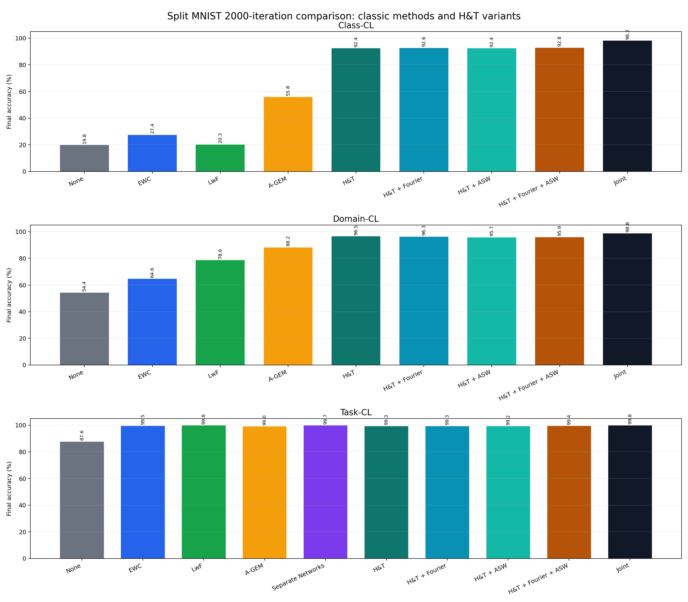
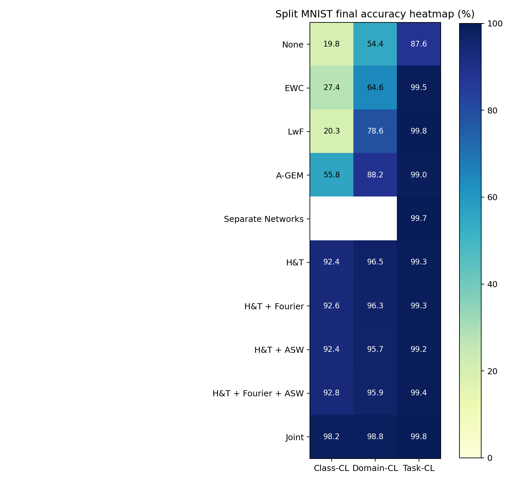
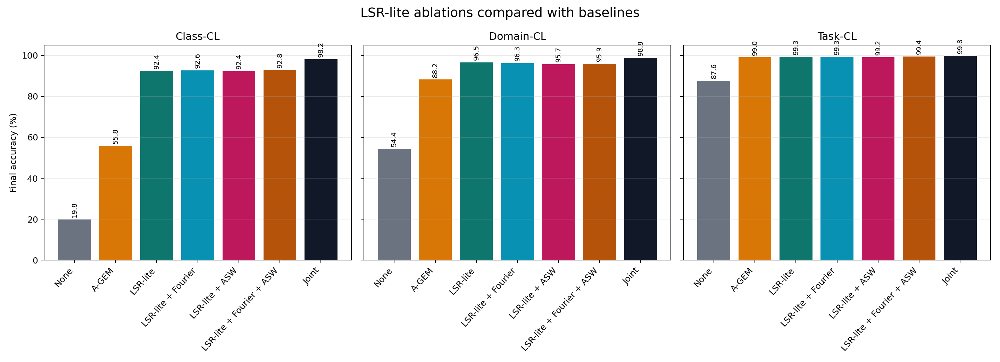
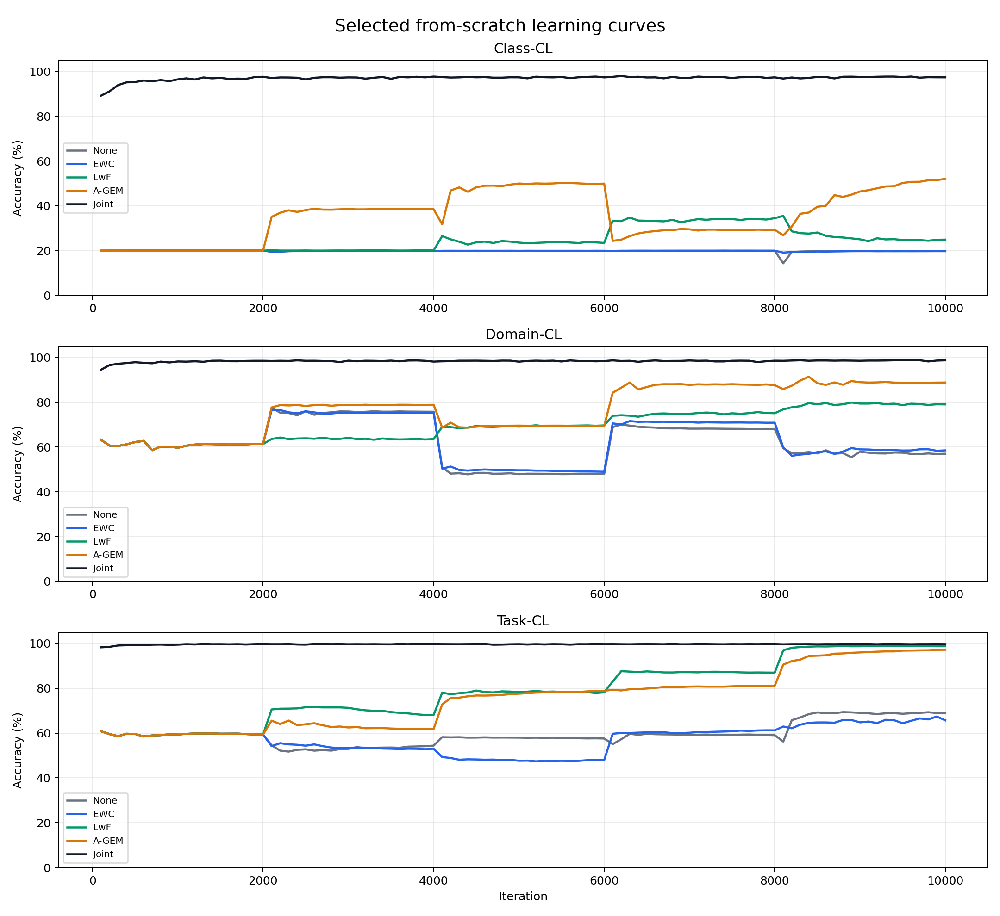
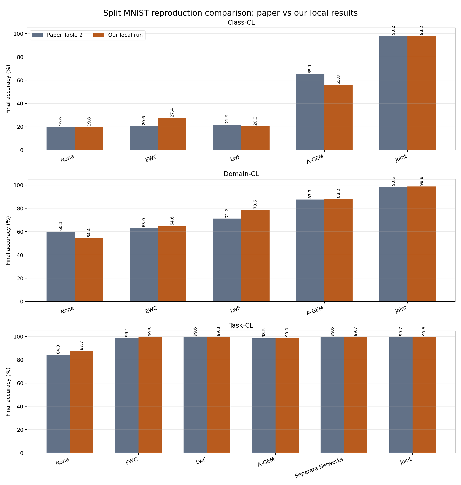
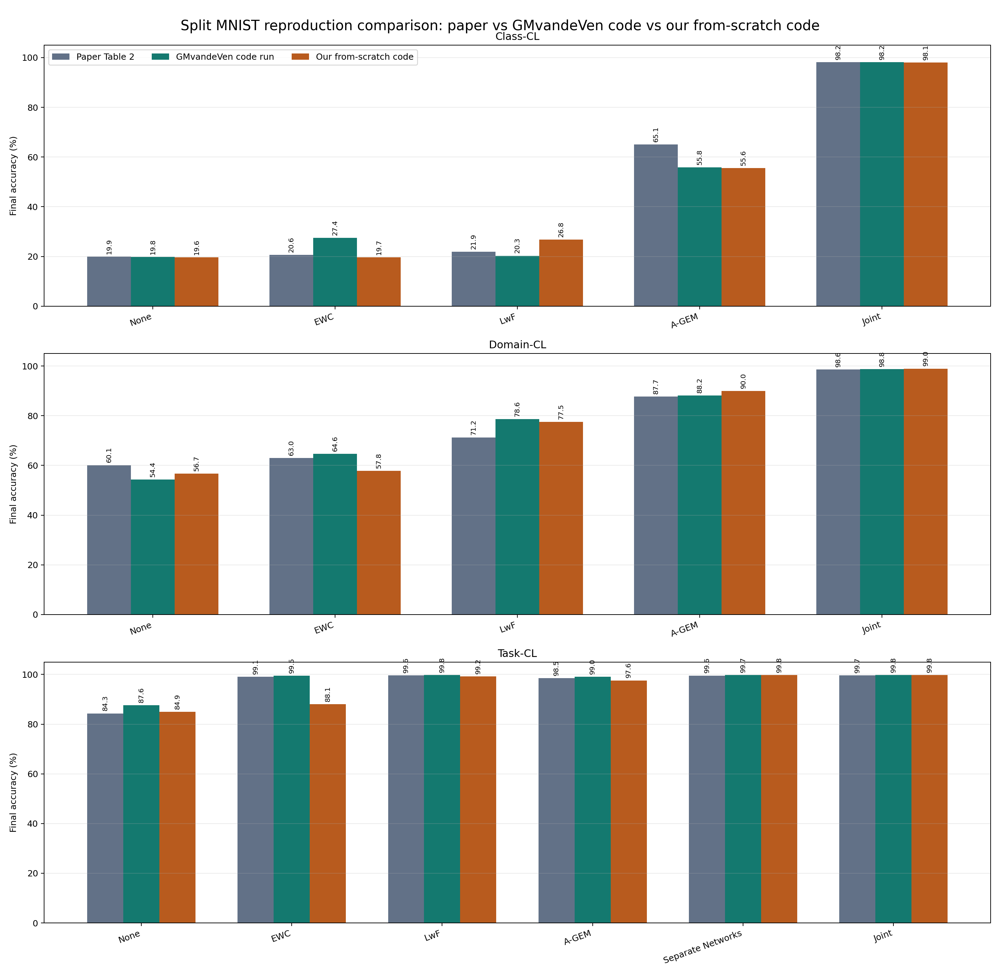

השיטה הטובה ביותר שאינה Joint: LSR-lite + Fourier + ASW
Continual Learning | Split MNIST | RTX 3070
ניסוי למידה מתמשכת על Split MNIST
הרצה מקומית של מאגר GMvandeVen/continual-learning על Windows עם GPU, כולל השוואה בין שיטות בסיס, שיטות קלאסיות, ווריאנטים ניסיוניים של LSR-lite.
השיטה הטובה ביותר שאינה Joint: LSR-lite
השיטה הטובה ביותר שאינה Joint: LwF
5 contexts, 2000 iterations, batch 128, acc-n 1024
הרעיון
איך המכונה לומדת כאן?
המודל הוא רשת נוירונים שמקבלת תמונת MNIST ומחזירה ציון לכל מחלקה. בזמן אימון רגיל, היא רואה דוגמאות, מחשבת טעות מול התשובה הנכונה, ומעדכנת את המשקולות בעזרת backpropagation ו-Adam optimizer.
ב-continual learning הבעיה קשה יותר: המודל לא מקבל את כל הדאטה בבת אחת. הוא לומד רצף של contexts, למשל זוגות ספרות שונים בכל שלב. אחרי שהוא עובר לשלב חדש, הוא עלול לשכוח את מה שלמד קודם. זה נקרא catastrophic forgetting.
שלושת התרחישים
- Class-CL: אין זהות משימה בזמן הערכה. המודל צריך לבחור בין כל 10 הספרות. זה התרחיש הקשה ביותר.
- Domain-CL: אותן מחלקות חוזרות תחת שינוי דומיין או חלוקה אחרת. קשה, אבל פחות מ-Class-CL.
- Task-CL: בזמן הערכה יודעים איזו משימה נבדקת, ולכן מגבילים את המחלקות המותרות. זה מקל מאוד.
השיטות
מה כל שיטה מנסה לעשות?
None
אימון רגיל על context נוכחי בלבד. אין הגנה מפני שכחה, ולכן ב-Class-CL הוא קורס.
Joint
upper bound: אימון על כל הדאטה יחד. לא תרחיש continual אמיתי, אבל נותן יעד להשוואה.
EWC
Elastic Weight Consolidation מענישה שינוי במשקולות שהיו חשובות למשימות קודמות.
LwF
Learning without Forgetting משתמש ב-distillation: המודל החדש מנסה לשמר את התנהגות המודל הישן.
A-GEM
שומר buffer קטן של דוגמאות עבר ומשתמש בהן כדי למנוע עדכון גרדיאנט שפוגע יותר מדי בעבר.
Separate Networks
רשת נפרדת לכל task. מתאים בעיקר ל-Task-CL, שבו יודעים בזמן הערכה איזו משימה פעילה.
Generative Classifier
מנסה ללמוד מודל גנרטיבי למחלקות ולהשתמש בו לסיווג. בניסויים שלנו הוא לא נתמך נקי בכל התרחישים, וב-Class-CL 2000 נכשל/נתקע.
LSR-lite
השיטה הניסיונית שלנו: replay של דוגמאות אמיתיות מהעבר, עם labels, teacher logits ו-feature anchoring.
Fourier auxiliary loss
איבר עזר שמנסה לשמר מבנה ספקטרלי של ה-feature vector. הוא לא מחליף replay אמיתי.
ASW
Adaptive Stability Weighting משנה דינמית את משקל ה-distillation וה-feature anchoring לפי יחס old/new loss.
LSR-lite
המנגנון הניסיוני שבדקנו
LSR-lite שומר buffer הוגן של 100 דוגמאות למחלקה. כל דוגמה כוללת את התמונה, התווית, logits של המורה בזמן ההכנסה ל-buffer, ווקטור feature פנימי מהשכבה שלפני הפלט.
L_total =
L_CE_current
+ L_CE_replay
+ lambda_kd * L_KD_logits
+ lambda_feat * L_feature_anchor
+ lambda_fft * L_Fourier_optionalתוצאות
דיוק סופי לפי תרחיש
Class-CL
| שיטה | דיוק | פער מ-Joint | שיפור מעל None |
|---|---|---|---|
| None | 0.1982 | 0.7834 | 0.0000 |
| EWC | 0.2742 | 0.7074 | 0.0760 |
| LwF | 0.2027 | 0.7789 | 0.0045 |
| A-GEM | 0.5580 | 0.4235 | 0.3599 |
| Generative Classifier | failed | - | - |
| LSR-lite | 0.9243 | 0.0573 | 0.7261 |
| LSR-lite + Fourier | 0.9264 | 0.0552 | 0.7282 |
| LSR-lite + ASW | 0.9241 | 0.0575 | 0.7259 |
| LSR-lite + Fourier + ASW | 0.9284 | 0.0531 | 0.7302 |
| Joint | 0.9815 | 0.0000 | 0.7834 |
Domain-CL
| שיטה | דיוק | פער מ-Joint | שיפור מעל None |
|---|---|---|---|
| None | 0.5435 | 0.4444 | 0.0000 |
| EWC | 0.6464 | 0.3414 | 0.1029 |
| LwF | 0.7863 | 0.2015 | 0.2428 |
| A-GEM | 0.8819 | 0.1060 | 0.3384 |
| LSR-lite | 0.9651 | 0.0228 | 0.4216 |
| LSR-lite + Fourier | 0.9627 | 0.0252 | 0.4192 |
| LSR-lite + ASW | 0.9574 | 0.0305 | 0.4139 |
| LSR-lite + Fourier + ASW | 0.9593 | 0.0286 | 0.4158 |
| Joint | 0.9879 | 0.0000 | 0.4444 |
Task-CL
| שיטה | דיוק | פער מ-Joint | שיפור מעל None |
|---|---|---|---|
| None | 0.8765 | 0.1216 | 0.0000 |
| EWC | 0.9952 | 0.0029 | 0.1187 |
| LwF | 0.9978 | 0.0003 | 0.1213 |
| A-GEM | 0.9904 | 0.0077 | 0.1139 |
| Separate Networks | 0.9974 | 0.0007 | 0.1209 |
| LSR-lite | 0.9933 | 0.0048 | 0.1168 |
| LSR-lite + Fourier | 0.9926 | 0.0055 | 0.1161 |
| LSR-lite + ASW | 0.9919 | 0.0062 | 0.1154 |
| LSR-lite + Fourier + ASW | 0.9940 | 0.0041 | 0.1175 |
| Joint | 0.9981 | 0.0000 | 0.1216 |
ויזואליזציה
הגרפים המרכזיים




השוואה למאמר
תוצאות המאמר מול התוצאות שלנו
ההשוואה היא מול Table 2 במאמר Three types of incremental learning. חשוב לזכור: במאמר מדווחים ממוצע על 20 זרעים עם SEM, ואצלנו מדובר בריצות מקומיות בודדות על RTX 3070, לכן זו השוואה איכותית ולא שחזור סטטיסטי מלא.


| תרחיש | מה דומה למאמר? | מה שונה? |
|---|---|---|
| Class-CL | None ו-Joint כמעט זהים למאמר: בערך 20% ו-98%. | A-GEM אצלנו נמוך יותר: 55.80% לעומת 65.10%. Generative Classifier נכשל אצלנו ולכן אין שחזור מלא. |
| Domain-CL | A-GEM ו-Joint קרובים מאוד למאמר. | None נמוך יותר אצלנו, LwF ו-EWC מעט/הרבה גבוהים יותר. |
| Task-CL | כל השיטות המרכזיות קרובות מאוד לערכי המאמר, סביב 99% לשיטות החזקות. | None אצלנו מעט גבוה יותר מהמאמר. |
קבצים: PAPER_COMPARISON.md, CSV, גרף PNG, CSV השוואה משולשת, גרף השוואה משולשת, תוצאות הקוד העצמאי.
{kind=link}
{kind=link}
מה למדנו
מסקנות קצרות
- Class-CL הוא המבחן האמיתי הקשה. בלי task identity, השיטות הקלאסיות מתקשות.
- LSR-lite הוא הכיוון המבטיח ביותר עבור Class-CL. הוא קפץ מ-0.1982 ב-None ליותר מ-0.92.
- Domain-CL גם מעדיף LSR-lite. plain LSR-lite היה הטוב ביותר מבין השיטות שאינן Joint.
- Task-CL מתנהג אחרת. בגלל allowed classes, LwF ו-Separate Networks כמעט מגיעים ל-Joint.
- Fourier ו-ASW הם ablations. הם מעניינים, אבל לא הלב של ההצלחה. הלב הוא replay אמיתי + distillation + feature anchoring.
קוד
הקוד שהתווסף לפרויקט
הריפו הזה כולל עכשיו גם את הקוד שנכתב עבור הניסוי, אבל בצורה נקייה: ללא datasets, ללא raw results גדולים, וללא העתקה מלאה של הריפו המקורי.
from_scratch/splitmnist_cl.py
המימוש החדש להגשה: קוד PyTorch עצמאי ל-None, Joint, EWC, LwF, A-GEM, Separate Networks, Generative Classifier וכל וריאנטי LSR-lite, בלי תלות בקוד של GMvandeVen.
run_splitmnist_from_scratch.ps1
סקריפט שמריץ את הניסויים הארוכים מהקוד העצמאי ושומר logs, summary.csv ו-learning_curve.csv.
הערה חשובה להגשה
הנתיב הישן שהריץ את הריפו המקורי נשאר כרפרנס בלבד. לפי הדרישה החדשה, מגישים ומשחזרים תוצאות דרך code/from_scratch/.
train_lsr_lite.py
מימוש LSR-lite: replay אמיתי, labels, teacher logits, feature vectors, Fourier auxiliary loss ו-ASW.
Phase runners
שלושה סקריפטים PowerShell שמריצים Class-CL, Domain-CL ו-Task-CL ל-2000 איטרציות.
Summary scripts
סקריפטים שאוספים תוצאות, יוצרים summary.csv, עקומות למידה וגרפים סופיים.
Patch
קובץ patch שמראה את השינויים הקטנים שנוספו לריפו המקורי עבור logging של learning curves.
הסבר מפורט
CODE_EXPLANATION.md מסביר איך הקוד עובד ומה כל רכיב עושה.
תיקיית הקוד
code/ מכילה את כל קבצי הקוד הרלוונטיים שנוספו בפרויקט.
מה מומש ומה הורץ
METHODS_IMPLEMENTATION.md מסביר אילו שיטות היו מוכנות בריפו המקורי ואילו שיטות מימשנו בעצמנו.
בדיקת תקינות
IMPLEMENTATION_AUDIT.md מסכם מה עומד בדרישת המימוש העצמאי, מה תוקן, ומה עדיין מוגדר כשחזור חלקי.
קבצים
הורדות וקבצי מקור
{kind=link}
{kind=link}
{kind=link}
דרישות הגשה
איך הפרויקט עונה על הדרישות
Algorithmic Thinking
הפרויקט מציג את בעיית stability-plasticity: ללמוד מידע חדש בלי למחוק ידע ישן. כל שיטה פותרת את המתח הזה בדרך אחרת.
שלבי הפרויקט
התקנת סביבת CUDA, בדיקות smoke, הרצת baseline, פיתוח LSR-lite, הרצת Class/Domain/Task ל-2000 איטרציות, ויצירת דוחות וגרפים.
בדיקות בכל שלב
נבדקו CUDA, זמינות GPU, הרצות קצרות, הערכת full test, מדיניות Class-CL ללא task identity, ו-Task-CL עם allowed classes.
מסקנות מהפלט
LSR-lite היה חזק במיוחד ב-Class-CL וב-Domain-CL. ב-Task-CL, LwF ו-Separate Networks כמעט הגיעו ל-Joint.
Reflective Writing
קובץ הרפלקציה נמצא כאן: takeaways.md. הוא כתוב באנגלית ולכן מתאים לדרישת takeaways.md.
סרטון
קובץ הנחיות וקישור placeholder נמצא כאן: VIDEO.md. אחרי הקלטת הסרטון צריך להחליף את ה-placeholder בקישור YouTube או דומה.
קישורי AI
נעשה שימוש ב-OpenAI ChatGPT/Codex לסיוע בתכנון, כתיבת סקריפטים, debugging, יצירת גרפים ודוקומנטציה.
קישורים חשובים
פרסום
איך להפעיל את זה ב-GitHub Pages
1. להעלות את התיקייה docs/ ל-GitHub יחד עם הריפו.
2. להיכנס ב-GitHub ל-Settings → Pages.
3. לבחור Deploy from a branch.
4. לבחור branch, בדרך כלל main, ותיקייה /docs.
5. לשמור. אחרי דקה או שתיים GitHub יציג URL של האתר.